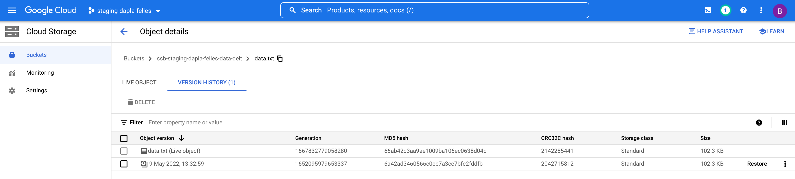

Gjenopprette data fra bøtter
Alle bøtter har automatisk versjonering. Dette gjør det mulig å tilbakeføre filer til en tidligere versjon eller gjenopprette filer som er slettet ved et uhell.
Logg inn på Google Cloud Console og søk opp “Cloud Storage” i søkefeltet. Klikk på den bøtten hvor filen er lagret under “Buckets”.
Gjenopprette en slettet fil
Fra Cloud Storage skjermbildet kan man navigere seg frem til den mappen hvor filen tidligere er lagret og skru på radioknappen “Show deleted data” (Figur 1)

Nå vil man kunne se slettede filer i kursiv med teksten (Deleted) på slutten. Kolonnen “Version history” vil også vise hvor mange tidligere versjoner som finnes av denne filen. Trykk på filnavnet du ønsker å gjenopprette og velg deretter fanen “Version history”. I listen av versjoner til denne filen har man mulighet til å gjenopprette til en tidligere versjon ved å klikke på “Restore” (Figur 2).
Gjenopprette en fil til en tidligere versjon
Fra Cloud Storage skjermbildet kan man navigere seg frem til den mappen hvor filen er lagret, og trykke på filnavnet. Velg deretter fanen “Version history”. I listen av versjoner til denne filen har man mulighet til å gjenopprette til en tidligere versjon ved å klikke på “Restore” (Figur 3).
